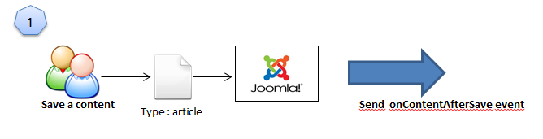
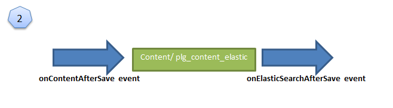
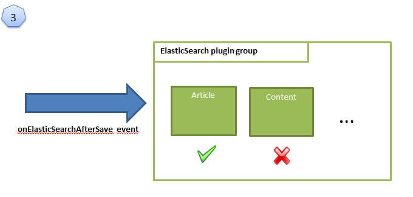
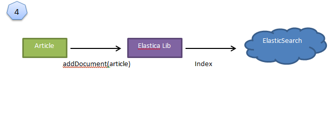
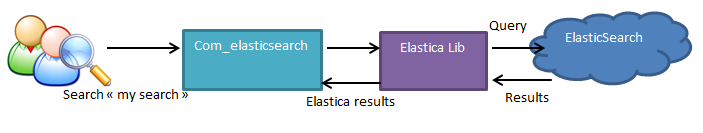
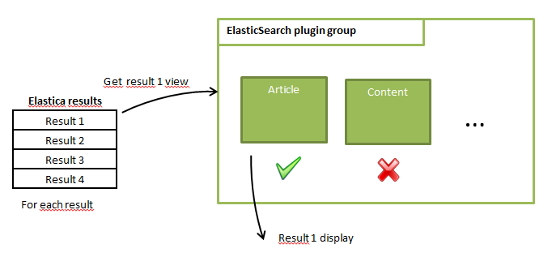

JES - Extension ElasticSearch for Joomla!
Developer Guide
Overview
This ElasticSearch extension works with Joomla 2.5 and ElasticSearch 0.90.2. It is based on the structure of com_search and com_finder. It is easy to add a type of content thank to plugins. ElasticSearch component automatically detects them. To interact with ElasticSearch, this extension use Elastica, a PHP client.
Installation package contains several plugins and a component:
- com_elasticsearch: This core component makes query to ElasticSearch and show results.
- plg_content_elastic: This plugin transfers events like OnContent* to onElasticSearch*
- plg_system_elasticaLib: To integrate Elastica library, autoload method to use Elastic in all pages.
- plg_elasticsearch_article: Indexes articles, basic contents of Joomla
- plg_elasticsearch_contact: Indexes contact, basic contents of Joomla
How it works
Indexation
When content in Joomla is added, modified or deleted events are triggered. Main events are: onContentAfterSave, onContentAfterDelete. In example bellow, a user saves an article.
We can notice in the step 2 that events starting by “onContent” are sent to plg_content_elastic plugin which re-sends them to the elasticsearch plugin group. In this way, onContent* become onElasticSearch*.
Each ElasticSearch plugin (like article and contact) have method called onElasticSearchAfterSave and onElasticSearchAfterDelete. When there is a modification on content, all ElasticSearch’s plugins will execute that method. It is important to check that content match with plugin with $context variable. For example articles context is “com_content.article”. In example bellow, all plugins of the group execute onElasticSearchAfterSave but just article plugin has a type which matches with context.
In the last step, article plugin send content to index to ElasticSearch thank to Elastic library.
Search
When a user makes a search, the com_elasticsearch component create a query to ElasticSearch using Elastica.
To show results, the component takes results from Elastic and sends them to the relevant plugin. The way results are displayed depends on the type of content. Html code is created in plugins.
Internationalization
Elasticsearch component supports multiple-languages. When a user makes a search, stopwords of current language of site are removed (words like “a”, “the”, “this”). Results which have the same or an undefined language are returned. It is possible thanks to Elasticsearch Analyzer. In fact the language is associated to an elasticsearch type.
For example, articles have three different in elasticsearch index:
- article (For content where language is not specified)
- article_fr
- article_en
Create a plugin
Structure
Plugins for ElasticSearch component must respect a particular structure of files
| ./myplugin.php | Contains all the PHP code. |
| ./myplugin.xml | XML description |
| ./view/plg_myplugin/tmpl/default.php | View of a result. Name of repertory is important and must be like “plg_[mypluginname]” |
All the plugin have the same global behavior. Indeed, they all extend “ElasticSearchIndexerAdapter” class (and not JPlugin). This adapter is an abstract class that deals with the initialization of the different analyzer and index. So when you create your plugin you have to extend it from that particular class. That abstract class is defined in the file administrator/component/com_elasticsearch/helpers/adapter.php so do not forget to include that file before extending the class (use require_once to include the file).
// no direct access
defined('_JEXEC') or die;
jimport( 'joomla.application.component.view' );
require_once JPATH_SITE.'/components/com_content/router.php';
require_once JPATH_SITE.'/components/com_content/helpers/route.php';
// Load the base adapter.
require_once JPATH_ADMINISTRATOR . '/components/com_elasticsearch/helpers/adapter.php';
/**
* ElasticSearch adapter for com_content.
*
*/
class plgElasticsearchArticle extends ElasticSearchIndexerAdapter
{
After creating the class, first thing to do is to indicate which type of content your plugin will deal with. You can do it with the variable “$type”. This variable is important for naming the type in Elasticsearch index. Another variable “$type_display” is used to display its name in administrator panel or for searching in the “search only” box.
/** * The type Elastic Search of content which will be indexed * * @var string */ protected $type = 'article'; /** * The type ElasticSearch to display * * @var string */ protected $type_display = 'Article';
Note: For $type_display it is possible to use Joomla JText for internationalization.
Configure mapping
The second configuration step is to implement is the construct function. It is an essential function because it defines the mapping of your type in Elasticsearch. In mapping you will choose the core ES type (string, integer etc.) for each of your fields. You can choose if the field will be index or if you want to boost a particular field.
public function __construct(&$subject, $config)
{
parent::__construct($subject, $config);
// Set boost
$this->boost=$this->params->get('boost');
// Doc here : http://www.elasticsearch.org/guide/reference/mapping/core-types/
$mapping= array(
'id' => array('type' => 'integer',
'include_in_all' => FALSE,
'index' => 'not_analyzed'),
'title' => array('type' => 'string',
'include_in_all' => TRUE,
'boost'=> 1.5),
'introtext' => array('type' => 'string', 'include_in_all' => TRUE),
'fulltext' => array('type' => 'string', 'include_in_all' => TRUE),
'created_by_alias' => array('type' => 'string', 'include_in_all' => TRUE),
'categories' => array('type' => 'string', 'include_in_all' => TRUE),
'language' => array('type' => 'string',
'include_in_all' => FALSE,
'index' => 'not_analyzed'),
'href' => array('type' => 'string', 'include_in_all' => FALSE),
'created_at' => array('type' => 'date', 'include_in_all' => FALSE),
'feature' => array('type' => 'integer', 'include_in_all' => FALSE),
'boost' => array('type' => 'float', 'include_in_all' => FALSE),
);
$this->setMapping($mapping);
}
Include_in_all property is important for searching. When the component makes a query it does not specified in which fields it wants search and ElasticSearch will search automatically in all fields where include_in_all is TRUE. If property is not set, it is TRUE by default.
Boost property is useful to give more importance. If a word is found in a title it is more important than if it is just in text.
If you need to have several languages do not forget the field language as above
When mapping is ready, call the method
setMapping : $this->setMapping($mapping);at the end of __construct method.
For more information about mapping please consult http://www.elasticsearch.org/guide/reference/mapping/core-types/
We can notice that boost is set just after the call to parent:__construct
// Set boost
$this->boost=$this->params->get('boost');
This line gets the boost parameter which is set in the article.xml file.
<config> <fields name="params"> <fieldset name="basic"> <field name="boost" type="float" description="Boost for this type" label="Boost" default="1.0" size="5" /> </fieldset> </fields> </config>
Boost is configurable in administrator plugin panel.
Exclude fields
If you just need to index a field for search without store it (useful for PDF document for instance), use setExcludeField method with an array of field you do not want to save.
// Exclude field file
$exclude = array('file');
$this->setSourceExclude($exclude);
How to index
Each time content is created, modified or deleted, events are sent to plugins. Basically, events triggered are named onContectAfterSave and onContentAfterDelete. These events are relayed to the elasticsearch plugin group and called onElasticSearchAfterSave and onElasticSearchAfterDelete (A third event exist, onElasticSearchChangeState when a content change of state). You have to define those methods for your plugin. At the beginning of onElasticSearch* methods, you need to check the context variable. Indeed, events are broadcasted to all plugin, but you have to index only if type corresponds to your plugin.
Add a content
public function onElasticSearchAfterSave($context, $row, $isNew)
{
// Skip plugin if we are saving something other than article
if ($context != 'com_content.article') {
return true;
}
//Delete the document in elasticsearch (if language is changed)
$this->delete($id = $row->id);
if($row->state == 1){ // If this article is published
$document = $this->rowToDocument($row);
$this->addDocument($document);
}
}
Because of languages, delete method is called before indexing. If an article is first indexed in English and next language is changed to French, we need to delete the English one because it is stored in two different ElasticSearch type (See internationalization part for more details).
rowToDocument converts row variable in Elastica\Document objet. addDocument index the document into elasticsearch
Now see how rowtoDocument works:
private function rowToDocument($row){
$id = $row->id;
//Create a date object
$date = new DateTime($row->created);
//Get the names of the categories
$category = JCategories::getInstance('Content')->get($row->catid);
$categories = array();
while($category&&$category->id > 1){
$categories[] = $category->title;
$category = $category->getParent();
}
// Create a document
$entity = array(
'title' => html_entity_decode(strip_tags($row->title)),
'introtext' => html_entity_decode(strip_tags($row->introtext)),
'fulltext' => html_entity_decode(strip_tags($row->fulltext)),
'created_by_alias' => $row->created_by_alias,
'metadata' => $row->metadata,
'language' => $row->language,
'categories' => implode(';',$categories),
'created_at' => $date->format('Y-m-d\Th:i:s'),
'href' => ContentHelperRoute::getArticleRoute($row->id),
'feature' => $row->featured
);
$document = new \Elastica\Document($id,$entity);
return $document;
}
The most important part is the $entity variable, it just an associative array. Keys of this array must correspond with fields of mapping. Method returns an Elastica\Document that is just created with id and array.
Note: Boost field could be used to give more importance to a specific document by setting a value upper than 1. If you want use Date type in your mapping you can use DateTime and format method as above.
Add all contents
If someone installs your plugin on his web site, he probably has already contents. He has to re-index his site to take into account that type of content. So your plugin has to provide an “onElasticSearchIndexAll” method.
public function onElasticSearchIndexAll($types){
//Get all articles
$db = JFactory::getDBO();
$query = $db->getQuery(true);
$query->select('*');
$query->from('#__content');
$db->setQuery((string)$query);
$articles = $db->loadObjectList();
foreach($articles as $article){
if($article->state == 1){ // If this article is published
$document = $this->rowToDocument($article);
$this->pushDocument($document);
}
}
$this->flushDocuments();
return $this->type_display;
}
Here the code do not use addDocument() because this function add just one document. Here we want to send all of them. To do that we have two functions:
Add a document in a list but do not send it to elasticsearch:
$this->pushDocument($document)
Send to elasticsearch all waiting documents:
$this->pushDocument($document)
Delete a content
public function onElasticSearchAfterDelete($context, $data)
{
// Skip plugin if we are deleting something other than article
if ($context != 'com_content.article') {
return false;
}
$this->delete($data->id);
return true;
}
Index a file
It is possible to index a file linked to a Joomla content. The attachment plugin of ElasticSearch must be installed. http://www.elasticsearch.org/guide/reference/modules/plugins/
First define in the mapping a field of type attachment (in constructor)
'file' => array('type' => 'attachment'),
You also need to exclude this field to not store it and just index the words.
// Exclude field file
$exclude = array('file');
$this->setSourceExclude($exclude);
Next, when you create an Elastica\Document ( in rowToDocument() ) just use :
$document->addFileContent('file', file_get_contents(PATH_TO_FILE));
Note : Elasticsearch uses Apache Tika to extract information of documents. You can find a list of supported format here: http://tika.apache.org/1.4/formats.html
View
When a search is made, the component sends the request to Elasticsearch and gets results. However, it does not know how to display them. For each result it will trigger an event and concerned plugin will render HTML. It is transparent to the developer. The only thing to do with your plugin is to create the HTML code. You need to create a file default.php in repertory view/plg_[name_of_your_type]/ and you will define which fields you want to display and the way you want to show it.
Some variables are defined in view:
- $this->data: contains the elasticsearch result. It is an array of fields.
- $this->highlight : contains an array of fields with highlight
- $this->type : contains the value of variable $type
Highlight
Highlighting is generated by ElasticSearch. Here bellow an example with the article plugin.
if($this->highlight['introtext']){
echo ElasticSearchHelper::truncateHighLight($this->highlight['introtext'],200);
}
else{
if($this->highlight['fulltext']){
echo ElasticSearchHelper::truncateHighLight($this->highlight['fulltext'],500);
}
else
{
$text=SearchHelper::prepareSearchContent($this->data['introtext'],"");
echo JHtmlString::truncate($text,500,true,false);
}
}
If a word is highlighted in “introtext”, it will display the content of the field. If not found, it checks if a word is highlighted in the “fulltext”. We can notice that a specific function is called for highlight: ElasticSearchHelper::truncateHighLight
This function truncates text and selects just some words on both sides of highlighted words. Second argument is a limit in number of characters.
Template overriding
This part is more to adapt an existing plugin to a website. Joomla provides a template system to custom display without modify existing code. As we have already seen, each plugin has a view to display. It is possible to override it and change display of a type. To do that, you just need to create a file at: [base_site]/template/[mytemplate]/html/com_elasticsearch/plg_[ name_of_your_type]/default.php
In this way, when a search will be done, it is this file that will be executed.